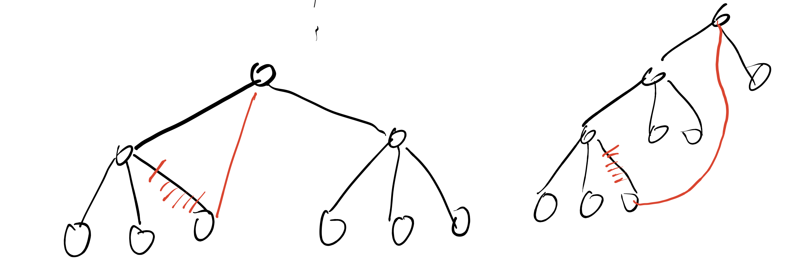
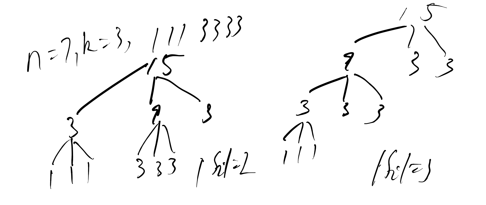

其他
哈夫曼树
哈夫曼树：给定 \(n\) 个数值，对其构建一棵含有这 \(n\) 个数值的带权叶子结点的二叉树，令 \(w_i, l_i\) 为叶子结点 \(i\) 的权值和到树根的距离，要求最小化 \(\sum w_il_i\)。
步骤
每次选择权值为 \(w_1, w_2\) 的最小的且没有父亲的两个结点，新建一个权值为 \(w_1 + w_2\) 的结点并将之前的两个结点连向该结点。
- 将 \(n\) 个结点权值压入堆中。
- 执行以下步骤 \(n - 1\) 次：
- 弹出堆中的最小的两个结点 \(u, v\)，令值为 \(w_u, w_v\)，\(ans = ans + w_u + w_v\)。
- 新建一个权值为 \(w_u + w_v\) 的结点 \(p\)，压入堆中，并且令该结点为 \(u, v\) 的父亲。
贪心思路：权值越小的结点的 \(l_i\) 应尽可能大。
\(ans\) 就是最终的 \(\sum w_i l_i\)。
哈夫曼编码
给定字符串和字符串中 \(n\) 种字符的出现次数，要求给字符进行一种不定长度的二进制编码，使得将字符串翻译为二进制串后长度最小。将 \(n\) 种字符的出现次数构建哈夫曼树，对于树上每个结点，左儿子边为 \(0\)，右儿子边为 \(1\)，从树根到叶子结点的路径的二进制串，就是该叶子对应的字符的二进制编码。
该编码的优点：任意一个字符的编码均不是其他所有字符的编码的前缀。
例子：
1 2 3 4 5 6 7 8 9 10 11 12 13 14 | |
习题讲解
Work Scheduling：后悔贪心，保留调整。
直播获奖，黑匣子：对顶堆。
洛谷 P2168 荷马史诗
类似于哈夫曼树，用同样的贪心策略建一棵 \(k\) 叉树。\(w_i\) 为每个字符出现次数，\(l_i\) 为每个字符的 \(k\) 进制编码的长度。
如果每次都是取出 \(k\) 个最小的权值，仔细发现，最终剩下的堆的大小可能在 \([2, k - 1]\) 之间。例如，\(n = 4, k = 3\)，最终堆剩下 \(2\) 个结点。
错误策略：将堆中剩下的所有结点取出，并连向最终的树根。将一个叶子结点连向树根，可以让 \(\sum w_il_i\) 更小。

当 \(n = k, 2k - 1, 3k - 2, 4k - 3, \dots = b * (k - 1) + 1 \ (b \ge 1)\)，最终堆只会剩下 \(1\) 个结点，即树根。
分类讨论求解文章的最短编码长度：
- 当 \((n - 1) \bmod (k - 1) = 0\)，按上述做法直接做。
- 当 \((n - 1) \bmod (k - 1) \ne 0\)，一开始先加入 \(k - 1 - (n - 1) \bmod (k - 1)\) 个 \(0\)，然后按上述做法直接做。\(0\) 一定是在最深的叶子中出现，树的高度也尽可能小。
第二问实际在问需要用尽可能短的 \(k\) 进制串来编码。当 \(n = 7, k = 3, w = [1, 1, 1, 3, 3, 3, 3]\) 时，有两种以下的哈夫曼树使得最终文章长度都是最短的：

这提示我们在取出权值最短的结点时，还需要考虑当前结点对应的子树的高度。当权值不同时优先取权值小的结点，当权值相同时优先取子树深度小的结点。
洛谷 P2278 操作系统
注意：当一个进程 \(p\) 还在运行（未结束时），如果来了一个优先级更高的进程 \(q\)，保留 \(p\) 的进度，然后进行 \(q\)。
枚举每个到来的进程 \(i\)：
- 先执行完等待队列中不被 \(i\) 干扰的进程。
- 如果还剩进程（会被干扰的），令接下来要执行的是进程 \(j\)，比较 \(j\) 和 \(i\) 的优先级 \(p_j, p_i\)
- \(p_j \ge p_i\)，执行 \(j\)，进程 \(i\) 在等待队列中
- \(p_j \lt p_i\)，执行 \(j\) 的一部分直到 \(i\) 到来，然后执行 \(i\)。\(i\) 后续是否有优先级更大的进程未知。
将所有进程按照以上步骤加入等待队列后，如果队列中还剩进程，模拟执行。用优先队列维护等待队列，记录每条进程的编号、到达时间、优先级、剩余执行时间。
洛谷 P3045 Cow Coupons
贪心策略为选择 \(C_i\) 小的奶牛用完优惠券（花钱尽可能少），然后剩下奶牛直接购买。这个贪心显然是错的。
假设存在一个直接购买的奶牛 \(j\)，买完 \(j\) 之后的价格 \(x \le M\)。如果用优惠券买 \(j\)，意味着用优惠券购买的奶牛集合中有一头要直接购买，令其为 \(i\)，此时花费 \(x - P_j + C_j - C_i + P_i = x + (P_i - C_i) - (P_j - C_j)\)。
令 \(D_i = P_i - C_i\) 表示使用优惠券可以优惠的钱数，如果 \(D_i \lt D_j\)，\(x + (P_i - C_i) - (P_j - C_j) = x + D_i - D_j \lt x\)，所有后面的奶牛中有可能存在用优惠券买的。
贪心调整为，先选择 \(C_i\) 小的 \(K\) 个奶牛用优惠券，对于剩余的奶牛 \(K + 1 \sim N\) 找直接购买花费最少的奶牛 \(x\)（\(P_x\) 最小的）和用优惠券购买花费最少的奶牛 \(y\)（\(C_y\) 最小的），然后选择其中花费最少的情况处理。注意延迟删除的问题。
洛谷 P2827 蚯蚓
本题先考虑暴力模拟，维护一个蚯蚓列表，每次在列表中查找蚯蚓长度最大值，切半，然后给其他所有蚯蚓长度 \(+q\)。时间复杂度 \(O(m(n+m))\)。
所使用到的查找、切半操作可以使用手写堆或优先队列维护，其他所有蚯蚓长度 \(+q\)，从相对的视角来看是给分出两个蚯蚓的长度 \(-q\)。这样单次操作能以 \(O(\log (n+m))\) 的时间维护。注意切半时需要先还原为原长度。
对于满分做法，有一个结论是先切半分出的蚯蚓长度 \(a, b\) 一定比后切半分出的蚯蚓的长度 \(c, d\) 长，即 \(a \gt c, b \gt d\)，因此可以用三个队列分别存储原来的 \(n\) 只蚯蚓（从大到小排好）、切半 \(\lfloor px \rfloor\) 的蚯蚓、切半 \(x - \lfloor px \rfloor\) 的蚯蚓，每次在三个队头寻找最大值，切半后的蚯蚓放在相应队尾即可。
最小函数值
\(\mathbb N*\) 是正整数集。根据一些初中代数知识可知，\(F_1(x) \sim F_n(x)\) 在 \(x \in [1, \infin)\) 上单调递增。类似于最大和，我们将 \(F_1(1) \sim F_n(1)\) 存入优先队列中，每次弹出最小值 \(F_t(x)\) 后将该函数的下一个值 \(F_t(x + 1)\) 压入优先队列，操作 \(m\) 次即可。时间复杂度 \(O(m \log n)\)。